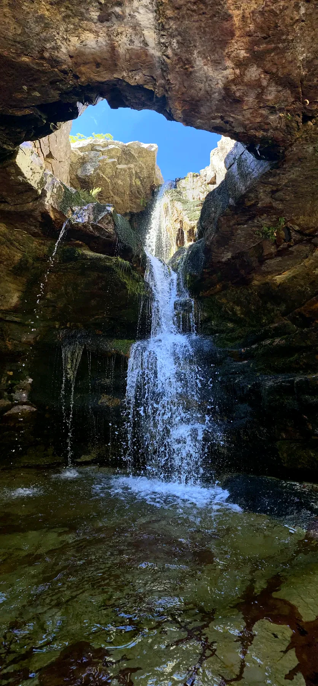
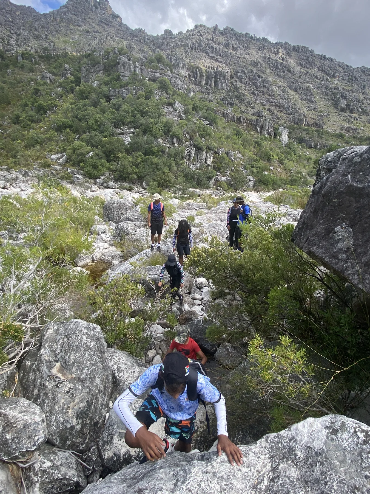
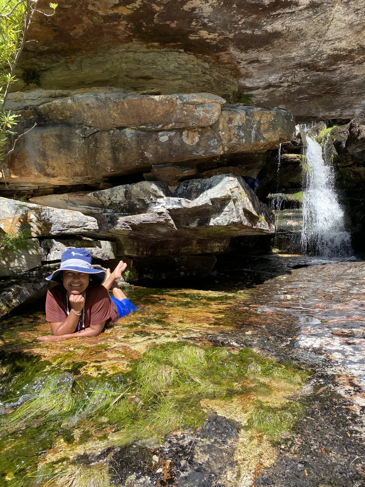
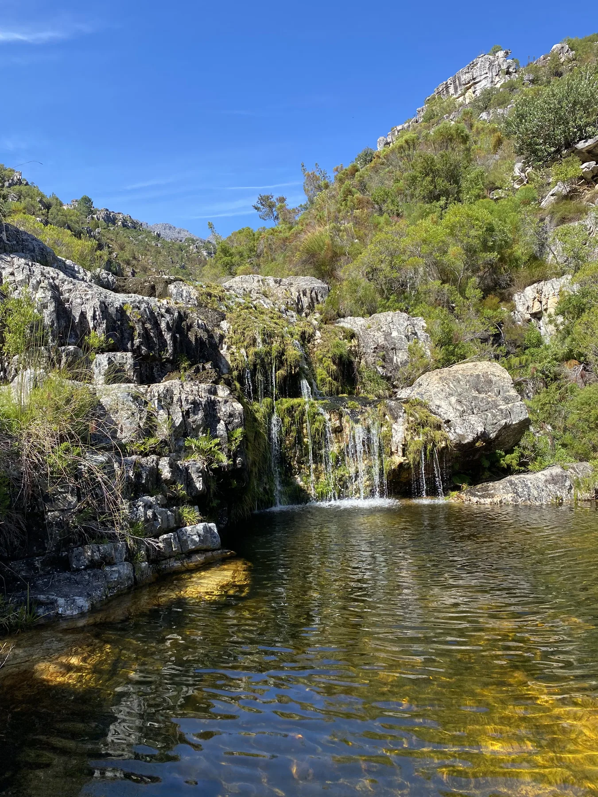
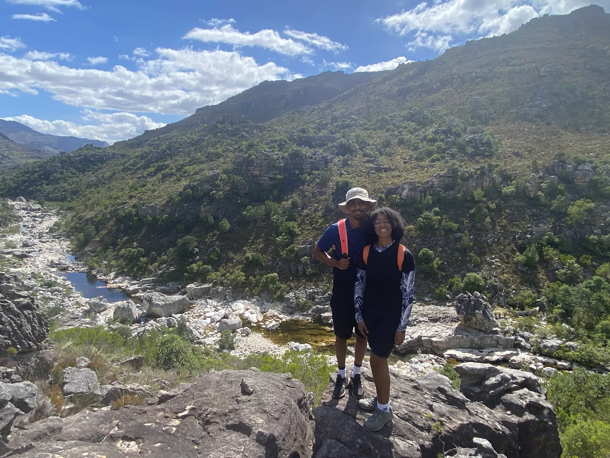

Descend to the Witte River
A short but steep descent from Bainskloof Pass brings us down into the river valley.
Short in distance. Big on adventure.
Hidden below Bainskloof Pass, the Witte River cuts through a spectacular landscape of giant boulders, clear rock pools and cascading waterfalls.
After a short, steep descent, conventional hiking gives way to rock hopping, a river crossing and playful movement through a secluded ravine. We slow down at three selected natural pools before reaching the spectacular Hole-in-the-Roof Waterfall.
This isn’t about covering kilometres. It’s about exploring, swimming and experiencing the mountain from inside the river valley.
A short but steep descent from Bainskloof Pass brings us down into the river valley.
We choose the safest crossing point for the day and assist the group. Water depth varies with rainfall.
Move over and around boulders beside clear pools, small cascades and dramatic rock formations.
We plan three rock-pool stops where swimming is optional and there is time to simply enjoy the setting.
The ravine reveals the Hole-in-the-Roof Waterfall — our main destination and longest stop.
We retrace our route downstream before the short, steep climb back to Bainskloof Pass.





This adventure is weather and river-level dependent. Your guide assesses recent rainfall, forecasts and conditions before departure. If Outdoor Addicts cancels for safety, you may move your booking or receive a full refund.
Permits are included where required. Transport from Cape Town is optional and subject to availability.
Outdoor Addicts transport is limited to 6 guests and subject to availability. For larger groups, private transfers can be arranged and quoted separately.